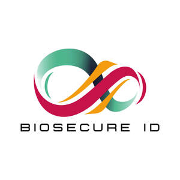
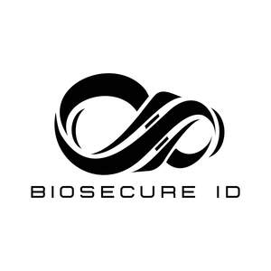

Trade Mark Journal No.2025/048 28 November 2025
UK00004239767 25 July 2025 (1,5,9,10,35,41,42,44,45)
Mark 1

Mark 2

- Class 1
- DNA Biometric testing kit; Rapid genetic identification solution testing kit; isothermal amplification for DNA finger printing testing kit; DNA-biometric testing kit for human identification; DNA-biometric testing kit for non-human identification; reagent kits for human identification; multiomics based identity solutions testing kit; Chemical reagents and preparations for scientific and forensic use; reagents for DNA extraction, purification, and amplification; buffer solutions; enzyme formulations; chemicals for use in molecular biology, genomics, and next-generation sequencing (NGS); preservatives and stabilizers for biological samples; reagents for use in forensic DNA analysis and identity testing.
- Class 5
- Reagents, including genetic testing panels used in medical research; reagents for paternity and genetic genealogy.
- Class 9
- DNA based biometric identity systems; biometric reader with DNA and/or protein and/or carbohydrates and/or RNA based markers and detection systems; computer programme that translates DNA, RNA, Protein and carbohydrate-based biological and individual identity or ID solutions; DNA arrays; DNA multiplex assays for medical purposes ; protein arrays and multiplex assays for medical purposes; analysis software for multimodal biometric systems; Scientific apparatus and instruments for DNA collection, analysis, and sequencing; forensic DNA collection kits; laboratory equipment for use in genetic testing; computer software for genomic data analysis, bioinformatics, and forensic identification; software platforms for DNA-based biometric databases; downloadable software for managing sequencing workflows, identity matching, and quality control in molecular testing; DNA Analysis Platform; Protein Analysis Platform; RNA analysis Platform; Platform comprising of the end-to-end sample to answer solution, including medical devices that identifies human and non-human targets for clinical diagnostics for healthcare and non-healthcare, including wellness applications.
- Class 10
- Genetic probes for DNA detection; Saliva collection kits for DNA analysis; saliva collection kits for RNA analysis; saliva collection kits for protein analysis; saliva collection kits for carbohydrate analysis; saliva collection kits for multi-omics analysis; blood and all other body fluid collection kits for DNA, RNA, protein, multi-omics analysis; medical diagnostic devices identifying human and non-human genetic and/or proteomic targets; Medical and diagnostic apparatus for analysing biological samples; DNA testing kits for medical and forensic purposes; sample collection devices for human and veterinary use; instruments for in vitro diagnostics, molecular diagnostics, and genetic screening; diagnostic swabs and containers for the collection and transport of biological samples.
- Class 35
- Bioinformatics data processing and pipeline development.
- Class 41
- Consulting and training for genetic testing.
- Class 42
- Genetic testing for research and development; genetic testing for identity; genetic testing for quantitation of biological analytes; body fluid analysis using transcripts and expressed genes; time of death analysis; paternity testing services; paternity and kinship analysis consultancy; microbiome analysis and identity; metagenomics analysis and identity solutions; Scientific research and development services in the fields of genomics, forensic science, molecular diagnostics, and biometric identification; DNA sequencing services; design and development of software for genomic and forensic analysis; validation of molecular assays and lab workflows; consultancy relating to forensic DNA testing and identity verification systems; hosting of software-as-a-service (SaaS) for genomic data interpretation and sample tracking; DNA fingerprinting for paternity; DNA fingerprinting for criminal justice; DNA fingerprinting for genetic identification of human remains; DNA fingerprinting of non-human sources; DNA extraction from human and non-human DNA; DNA quantitation from human and non-human sources; NGS based DNA analysis for identity, bodyfluid source and other related applications; Genetic identity for patient tracking; genetic identity of cells and cell lines; genetic identity of stem cells for quality and manufacturing purposes; multiomics identity and characterisation of samples from patients; multiomics analysis of medico-legal cases; consulting services to aid multi-modal biometric systems involving DNA, RNA, Protein, carbohydrate and other biochemical and microbiome containing identity; Genetic and forensic DNA testing services for use in legal, investigative, and clinical contexts; analysis of biological samples for medico-legal cases including paternity, identity, and sexual assault investigations; forensic sample analysis services; interpretation and reporting of genetic test results; Forensic investigative genetic testing; forensic investigative genetic genealogy; Forensic identity verification services; identification of human remains, missing persons.
- Class 44
- DNA analysis for genetic testing for health and medical applications, DNA and RNA analysis for cancer diagnosis and screening; genetic counselling and consultancy services; genetic testing for animals; genetic testing for screeing of populations and databasing (services); Genetic testing services for medical, forensic, and identity verification purposes; DNA profiling services; consulting services related to molecular diagnostics, ancestry, and inherited conditions; medical analysis of biological samples.
- Class 45
- Forensic advice for criminal investigations; human remain identification; missing persons identification; genealogical research; consultancy in forensic science related to legal and criminal investigations; expert witness services in the field of DNA evidence; advisory services relating to the legal use of biometric and DNA-based identification; support services for law enforcement and government in forensic policy and implementation; Medico-legal consulting services; expert witness services in genetic and forensic evidence; advisory services related to the legal interpretation of DNA test results; support services for legal professionals, courts, and law enforcement in DNA-based casework.
Yogesh Prasad
Representative: HGF Limited